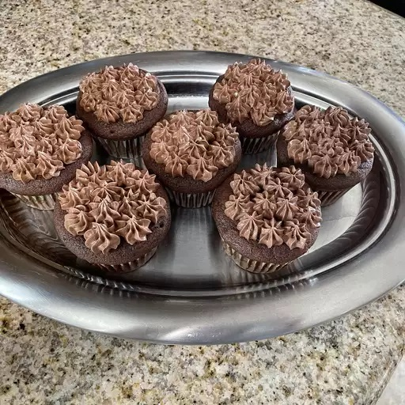

Cupcake

Description
Skip the boxed chocolate cupcake mix — homemade chocolate cupcakes are just as easy to make (and even more delicious). In just 30 minutes, you'll have rich and moist chocolate cupcakes ready to serve for your next holiday, party, or potluck. Be prepared to have everyone asking you for this decadent chocolate cupcake recipe!
Ingredients
- Cocoa Powder
- Flour
- Sugar
- Butter
- Vanilla
- Eggs
- Milk
- Leavening Agents
- Salt
Steps
- Preheat the oven to 350 degrees F (175 degrees C). Line a muffin pan with paper or foil liners.
- Sift together flour, cocoa, baking powder, baking soda, and salt.
- Cream together sugar and butter in a large bowl until light and fluffy.
- Add eggs, one at a time, beating well after each addition. Stir in the vanilla. Add flour mixture in two batches, alternating with milk; beat well.
- Spoon batter into the prepared muffin cups, filling each 3/4 full.
- Bake in the preheated oven until a toothpick inserted into the centers comes out clean, 15 to 17 minutes. Remove from the oven and let cool before serving or frosting.